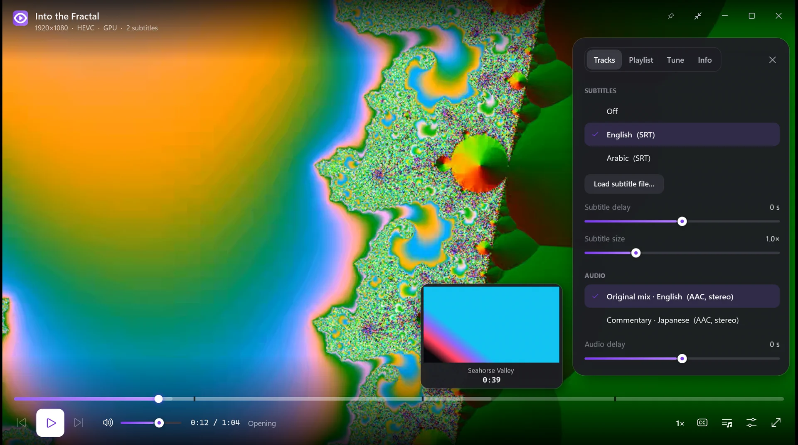
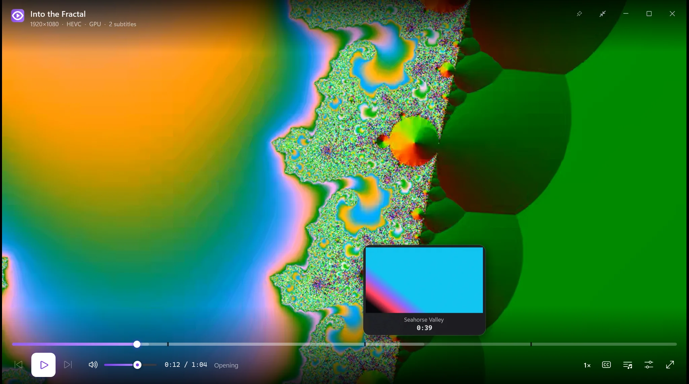
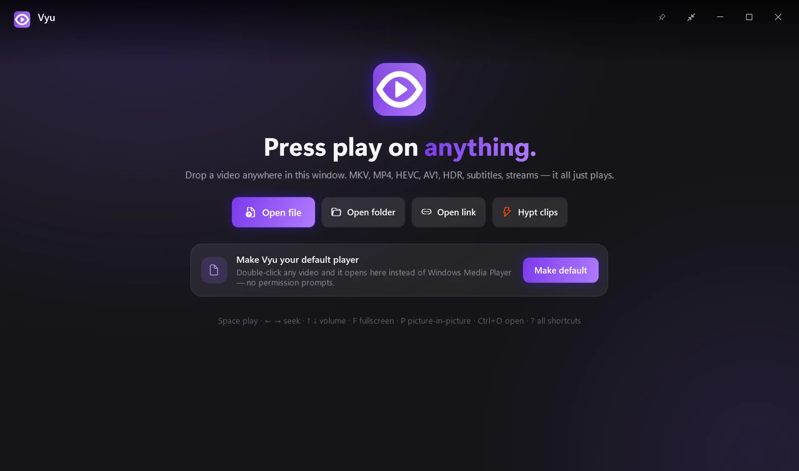

Press play on anything.
Vyu is mpv's legendary engine with an interface you'd actually want to look at. Every format, every subtitle, buttery GPU playback — and nothing in your way.

Vyu is mpv's legendary engine with an interface you'd actually want to look at. Every format, every subtitle, buttery GPU playback — and nothing in your way.

The decoding, rendering and subtitles are mpv's — the gold standard. Vyu adds the parts mpv never had: a real interface, previews, resume and taste.
MKV, MP4, HEVC, AV1, VP9, 10-bit, HDR tone-mapping, PGS/ASS/SRT subtitles, audio, HLS streams — and YouTube with yt-dlp.
D3D11 hardware decoding and mpv's gpu-next renderer. The controls stop drawing when they fade — watching costs what mpv costs.
Hover the timeline and see the exact scene, with chapter names. A silent second decoder renders tiny keyframes on the fly.
Every file remembers your spot, and the next episode in the folder plays by itself. Continue-watching on the home screen.
Tracks with real language names, auto-loaded external files, delay and size controls, perfect Arabic and right-to-left rendering.
One key shrinks Vyu into a floating window that stays on top. Keep-on-top, full screen and drag-anywhere included.
Brightness, contrast, saturation, gamma, aspect, rotate, zoom-to-fill — plus Battery, Balanced and Cinema quality modes.
Evens out explosions and whispers so you can watch late without riding the volume.
No admin prompt ever. One click makes Vyu your default player with native media keys, Windows flyout with seekbar, taskbar previews, and automatic updates.

Hover anywhere on the timeline: Vyu shows the frame, the time and the chapter. Drag to scrub live; release for a frame-exact jump. Chapters are marked right on the bar.
YouTube-style J K L, VLC-style arrows, and a few new tricks. Press ? in Vyu for the full list.

| Vyu | VLC | mpv | Movies & TV | |
|---|---|---|---|---|
| Plays MKV, HEVC, AV1, HDR, ASS/PGS | ✓ | ✓ | ✓ | needs add-ons |
| Modern interface with animations | ✓ | – | minimal | ✓ |
| Seek-bar thumbnail previews | ✓ | – | scripts | – |
| Resume every file + auto next episode | ✓ | partial | config | partial |
| High-quality scaling (EWA, debanding) | ✓ | – | ✓ | – |
| Picture-in-picture & keep on top | ✓ | partial | config | ✓ |
| Media keys & Windows media flyout, any window in front | ✓ | – | – | – |
| Open source | GPL | GPL | GPL | – |
Unzip, run, drop a file. Make it your default player from Tune → “Make Vyu my video player”.